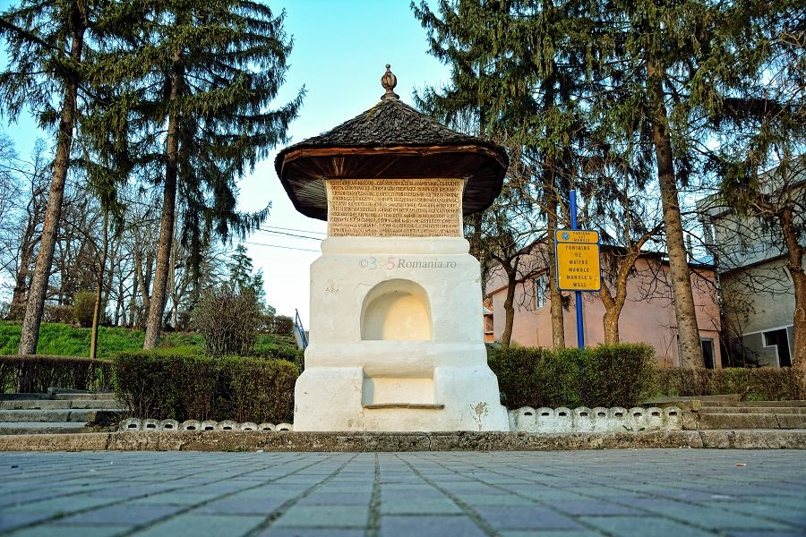

Descriere
Mănăstirea Curtea de Argeş este o mănăstire ortodoxă din România, situată în oraşul Curtea de Argeş, construită între 1515-1517 de Neagoe Basarab. Ansamblul cuprinde catedrala episcopală, unul dintre cele mai celebre monumente de arhitectură din ţara Românească. Catedrala este inclusă în Lista monumentelor istorice din România . Mănăstirea Curtea de Argeş este şi necropolă regală, începând cu anul 1914, aici fiind înmormântaţi regii şi reginele României: Carol I şi Elisabeta, Ferdinand şi Maria, Carol al II-lea şi Regina Elena, precum şi Mihai I şi Ana. în afară de mormintele regale, la Mănăstirea Curtea de Argeş se află şi moaştele sfintei Filofteia.
Legenda spune că, dorindu- şi să înalţe o biserică neasemuită ca frumuseţe, domnitorul i-a cerut meşterului Manole, ajutat de alţi nouă “meşteri mari”, să o ridice. Dar tot ce construiau ziua se năruia în timpul nopţii. Aşa că Manole îşi zideşte soţia iubitoare, Ana, în peretele construcţiei, pentru ca biserica să poată fi terminată. Impresionat de frumuseţea ei, dar temându-se că meşterii să nu mai înalţe, în altă parte, o biserică la fel de măreaţă, domnitorul îi abandonează pe aceştia pe acoperiş. Ca să scape, ei îşi făuresc aripi de şindrilă pentru a zbura, dar se prăbuşesc în ţărână, murind. De atunci, în preajma bisericii se află şi “Fântâna lui Manole” şi un izvor cu apă limpede, apărut chiar pe locul căderii lui Manole, ce aminteşte de jertfa constructorilor acesteia.
